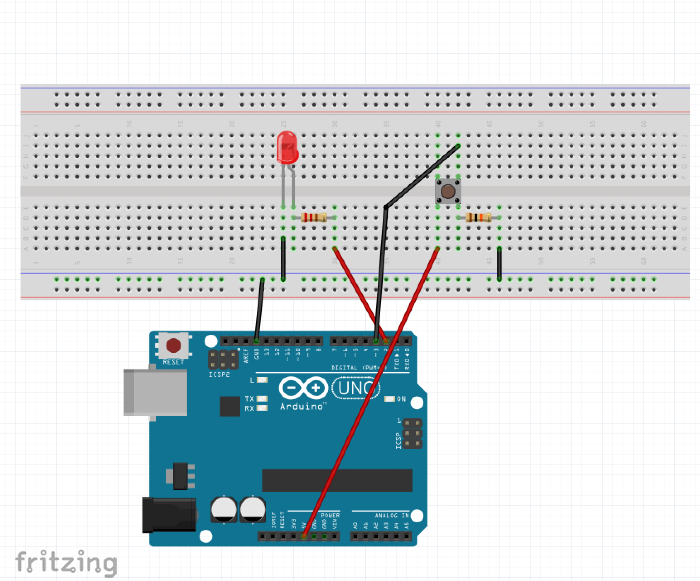
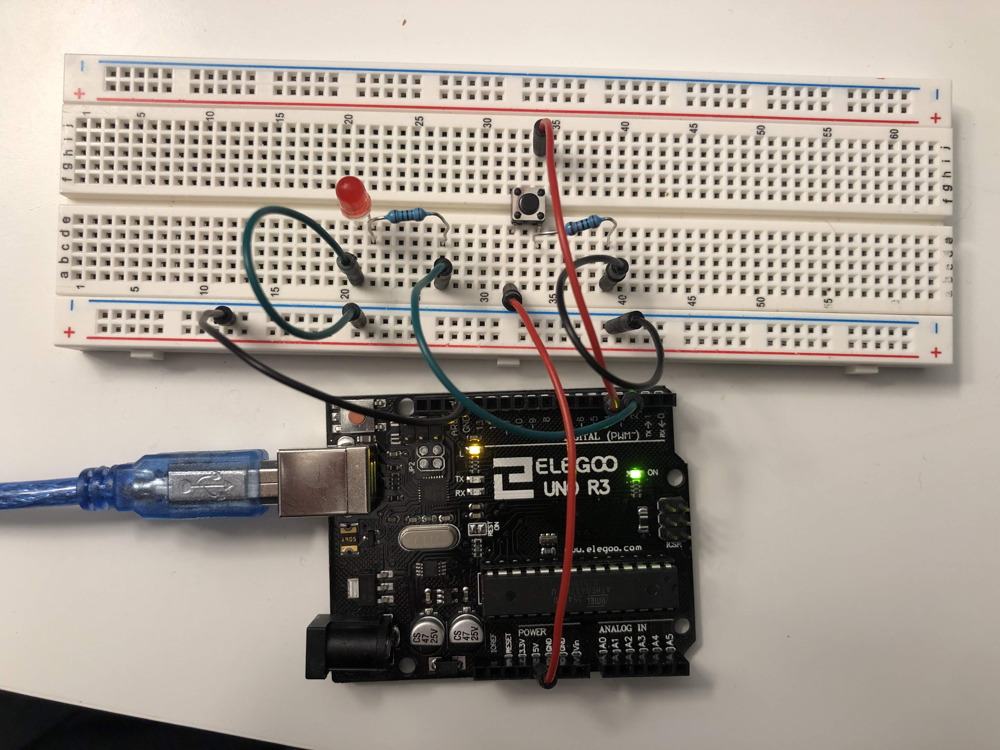
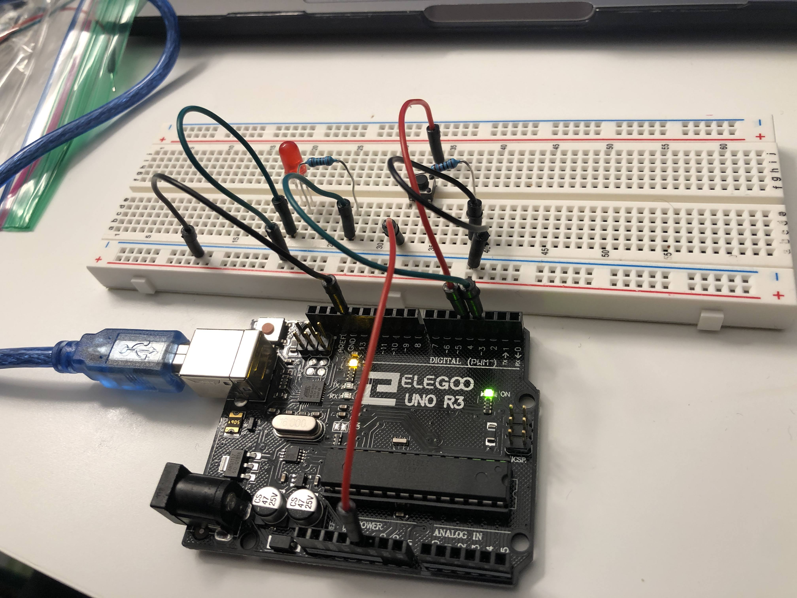
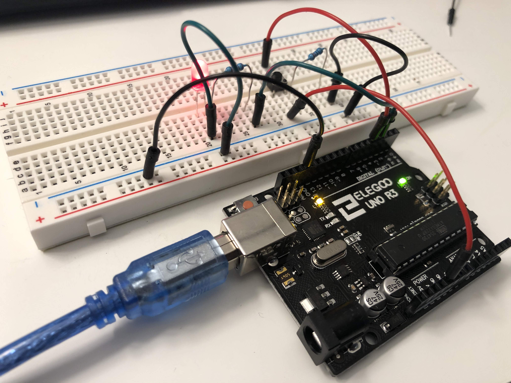
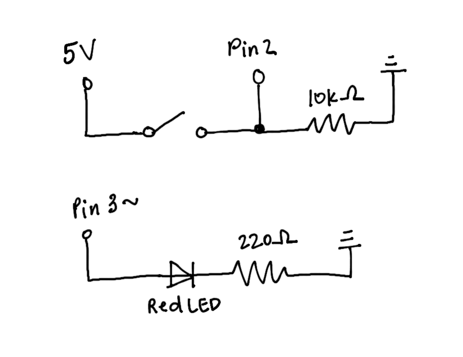
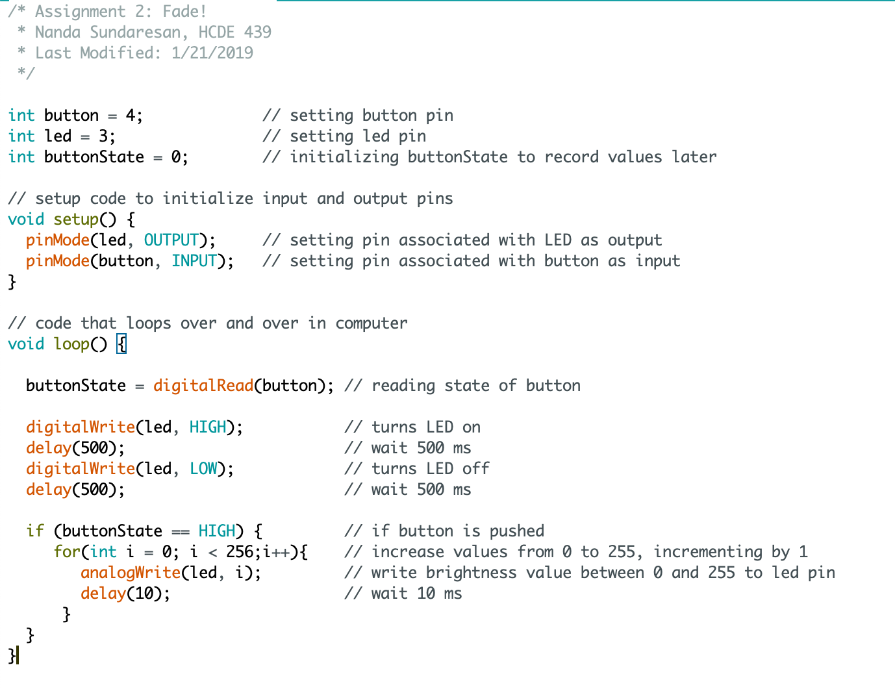

Circuit demo:

This is a gif showing how the circuit works when assembled.
Circuit diagram:

This is an image with details regarding how the circuit is assembled. This is easier to see than the gif above.
Here are some images of how the circuit looks assembled:



Schematic:

This is a schematic of my circuit. I used an analog pin for my LED so that I can change it's brightness when the button is pressed.
Math:
To choose the correct resistor for the red LED, I used Ohm's law.
V = IR
Known variables: I = 30mA (limited by the LED), V = 5V (total voltage) - 1.8V (voltage drop of LED)
R = V / I
R = ~107 Ohms
I chose to use the 220 Ohm resistor since it is the one with the closest value to 106.
Code Snippet:

To satisfy all the conditions of the assignment, I decided to use digitalWrite() when the button is not pressed, allowing the LED to flash on and off. When the button is pressed, the LED will fade from 0 brightness to full brightness, and repeat until the button is unpressed.